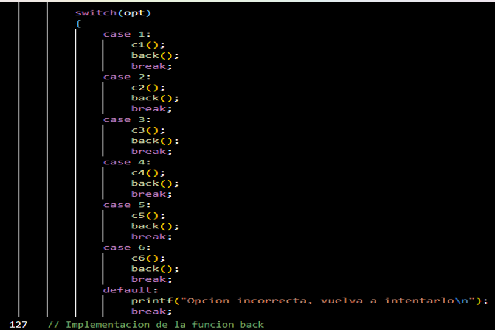
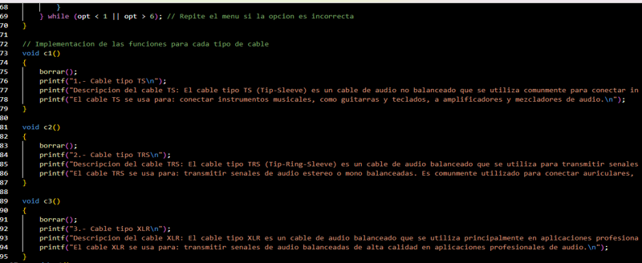
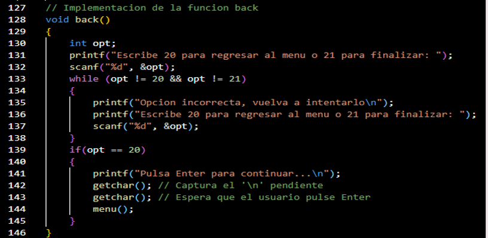
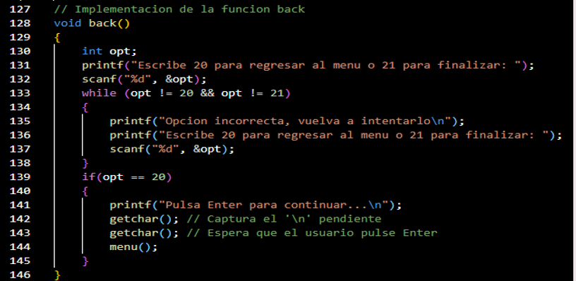
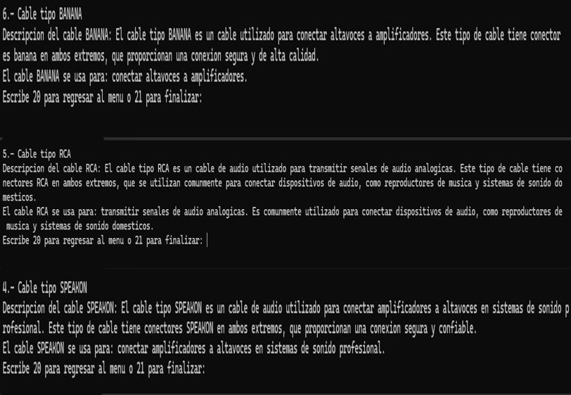
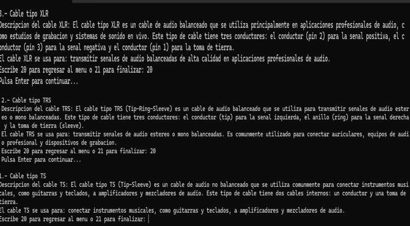
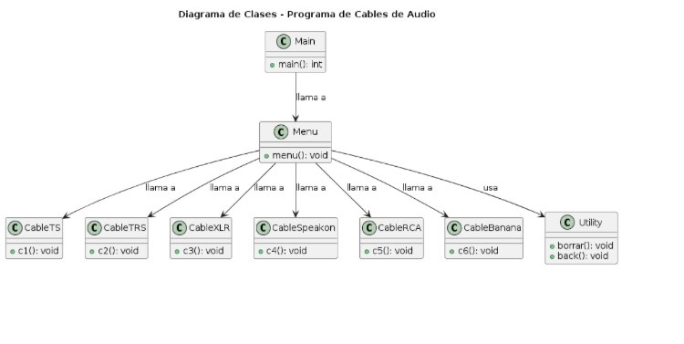

Práctica en C: Elección de Cable de Audio
Teoría
En esta práctica, desarrollaremos un programa en C para ayudar a los usuarios a elegir el mejor cable de audio para sus necesidades. Utilizaremos funciones, estructuras y arreglos para crear una aplicación de consola interactiva que evalúe diferentes cables de audio según ciertos criterios.
Funciones en C
Las funciones en C nos permiten organizar nuestro código en bloques lógicos y reutilizables. En nuestra práctica, utilizaremos funciones para realizar diferentes tareas, como calcular la calidad del cable de audio, mostrar información detallada sobre los cables disponibles, etc.
Estructuras en C
Las estructuras en C nos permiten definir tipos de datos personalizados que pueden contener varios campos de diferentes tipos. En nuestro caso, podríamos definir una estructura para representar un cable de audio, con campos como longitud, grosor, material, etc.
Arreglos en C
Los arreglos en C nos permiten almacenar múltiples valores del mismo tipo en una sola variable. En nuestra práctica, podríamos utilizar arreglos para almacenar información sobre diferentes cables de audio, como sus características técnicas, precios, etc.
Codigo
  

Código Ejecutable
 
Diagrama
